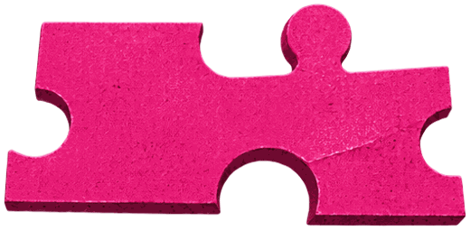

02The Room
Curated,
not filled.
That is the entire point.
Half decision-makers. Half the people who make the work. This is not a hall you get lost in. Every person in this room was chosen because they belong there.
one room, cut three ways
50%
Brand leaders
CMOs, Marketing Heads, Strategy Directors, Founders building brands
35%
Creative professionals
Storytellers, Designers, Filmmakers, Agency Owners, AI Innovators
15%
Emerging talent
Graduates stepping into marketing and creative work


The room, laughing together
For brands
You spend all year trying to find creative partners worth trusting. At BTL you are in a room with 75 of them for an evening. You don't just see their portfolio. You see how they think, what they believe, what they're willing to say out loud. That is due diligence no brief or pitch deck can give you.
For creatives
You spend all year trying to get in front of the right brand people. At BTL you are in a room with 75 of them for an evening. You don't pitch. You don't chase. You simply exist in the same room — and they see exactly who you are before any brief has been written.